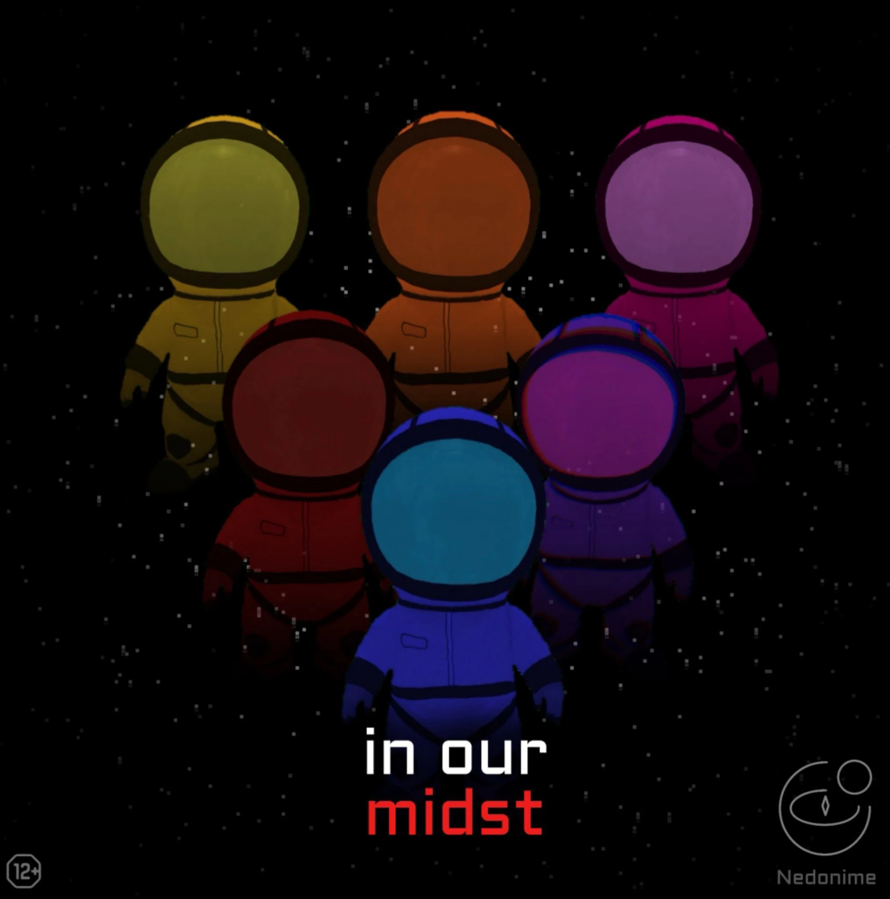
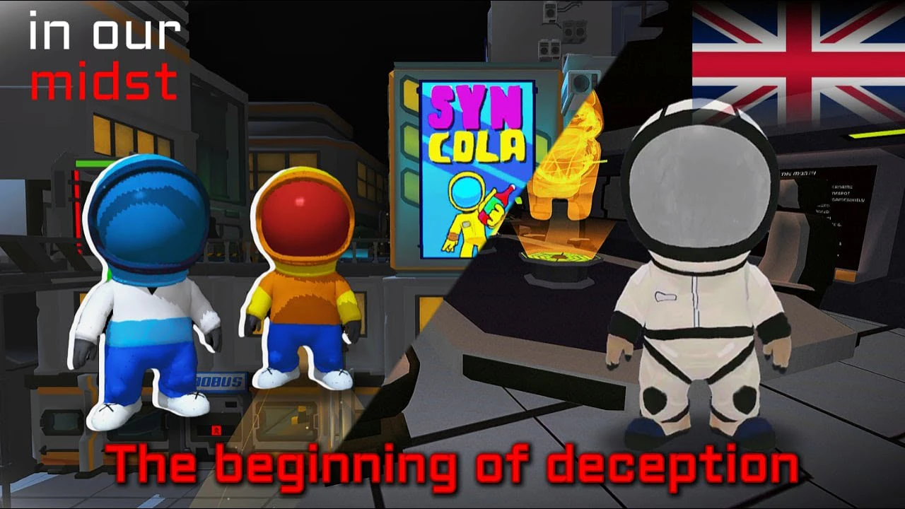
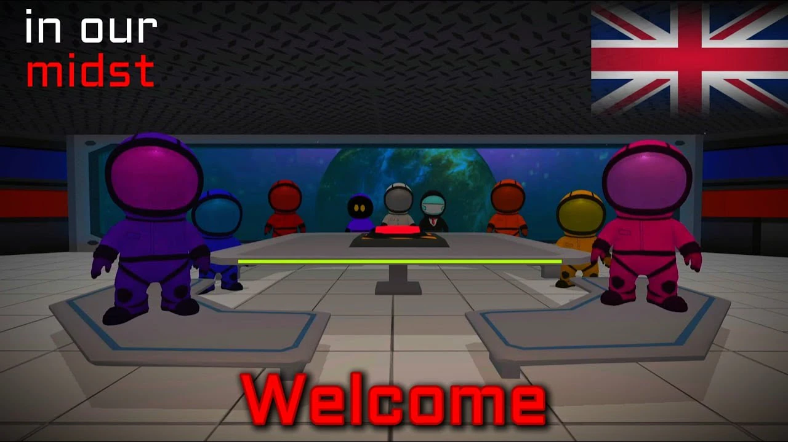
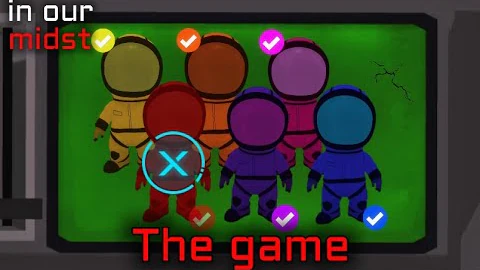
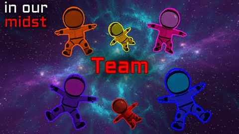
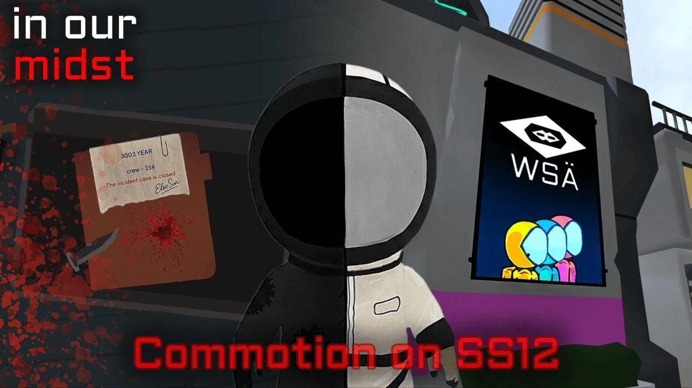
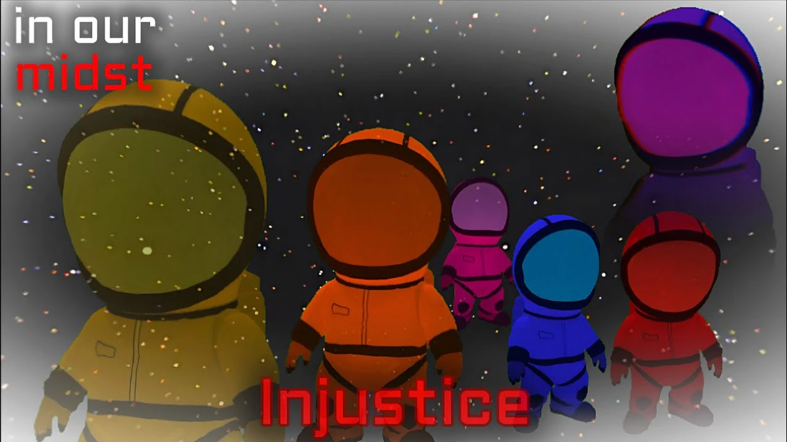
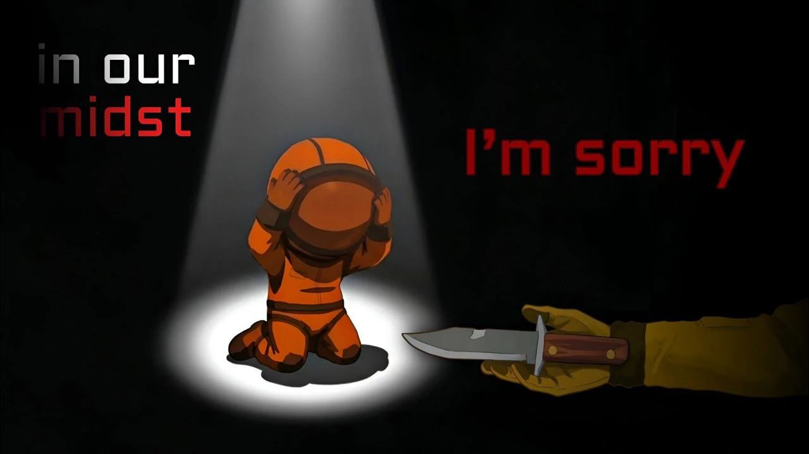
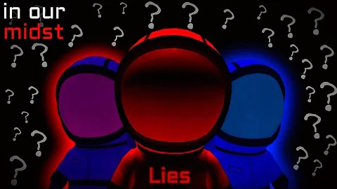
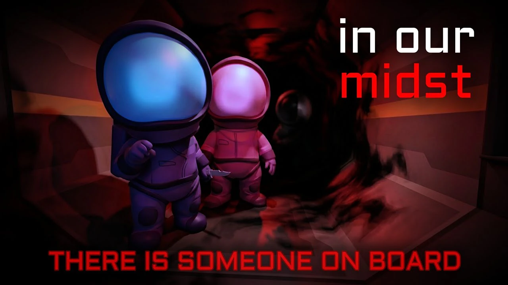

Game creator
Danila Demkin
Independent game developer, founder of Snow Bat and creator of Imposter 3D: Online Horror.
Official series hub
In Our Midst is the official canonical series in the universe of Imposter 3D: Online Horror, produced by the creative team Nedonime.
Season 1 tells its story across 10 episodes, published in English and Russian. Explore every synopsis and choose your preferred language below.

The official connection
The people and projects behind In Our Midst, connected in one place.
Game creator
Independent game developer, founder of Snow Bat and creator of Imposter 3D: Online Horror.
Original game
The cross-platform 3D horror game whose universe and canonical story continue in the series.
Visit the official game pageSeries producer
The creative team producing and presenting In Our Midst in English and Russian.
Nedonime on TelegramSeason 1 · 10 episodes
Official English synopses and direct links to every English and Russian edition.

The WSÄ organization sends new astronaut teams to explore deep space. Lex joins to uncover the truth behind his parents' disappearance, and Braid follows him into a selection process that may leave them no way back.

Lex and Braid begin training for a ten-year space mission. Strict rules, constant surveillance and their first meeting with the other astronauts bring new connections—and the first shadows of doubt.

WSÄ tests the crew with a psychological game built around cooperation, trust and pressure. The astronauts must identify a traitor among them, and Lex discovers that the betrayer was his most trusted ally.

After the tests reveal every astronaut's strengths and weaknesses, the crew begins to share the personal histories and motives hidden behind training and protocols. Their growing trust may be disrupted by a mysterious guest.

Six months into service, SS12's main engine is deliberately damaged. As every crew member denies involvement, interrogation, mistrust and fear drive Braid to reconstruct the events of the previous day.

The traitor remains hidden and time is running out. Under extreme stress, the crew approaches a moral breaking point while fear pushes some toward panic and others toward deliberately breaking the rules.

Darek is plunged into the pain of losing someone truly close. Guilt, accusations and fear cloud his mind and push him toward fatal mistakes while the tragedy appears destined to go unpunished.

The team crumbles as Lex searches for a way out and Braid's condition becomes critical. Panic and hopelessness mount before an irreversible event tears away every mask.

SS12 becomes a slaughterhouse. Lex and Stacy cannot escape the growing madness as Braid crosses a critical threshold and hunts the surviving crew through the dark ventilation shafts.
English + Russian
Watch the complete playlist on YouTube and join the dedicated In Our Midst community on Telegram.